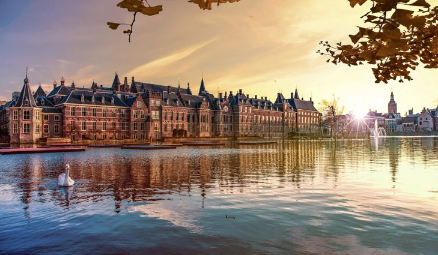

The Netherlands (Dutch: Nederland, [ˈneːdərlɑnt] (About this soundlisten)) is a country located mainly in Northwestern Europe. The European portion of the Netherlands consists of twelve provinces that border Germany to the east, Belgium the south, and the North Sea to the northwest, with maritime borders in the North Sea with Belgium, Germany and the United Kingdom. Together with three island territories in the Caribbean Sea—Bonaire, Sint Eustatius and Saba—it forms a constituent country of the Kingdom of the Netherlands. The official language is Dutch, but a secondary official language in the province of Friesland is West Frisian.
The six largest cities in the Netherlands are Amsterdam, Rotterdam, The Hague, Utrecht, Eindhoven and Tilburg. Amsterdam is the country's capital, while The Hague holds the seat of the States General, Cabinet and Supreme Court. The Port of Rotterdam is the largest port in Europe, and the largest in any country outside Asia. The country is a founding member of the EU, Eurozone, G10, NATO, OECD and WTO, as well as a part of the Schengen Area and the trilateral Benelux Union. It hosts several intergovernmental organisations and international courts, many of which are centered in The Hague, which is consequently dubbed 'the world's legal capital'.